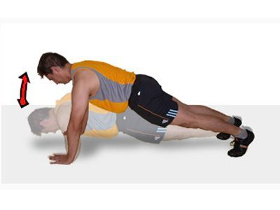

Tipos de flexiones desde el suelo.
Homepage
Our Clients
About Us
Privacy policy
Terms and Conditions
Photo gallery
Contacts
Welcome to Tipos de flexiones desde el suelo.
10 tipos de flexiones que potenciarán tu pecho y brazos .
19 Tipos De Flexiones Y Sus Beneficios - Quiero ser deportista
Flexiones: cómo hacerlas de forma correcta | CuidatePlus
Tipos de flexiones: ¿cómo se deben realizar adecuadamente .
15 flexiones diferentes para trabajar todo el cuerpo sin .
10 variantes de flexiones para principiantes - Entrenamiento
Flexión de codos - Wikipedia, la enciclopedia libre
Realiza flexiones en el suelo para reafirmar tu cuerpo - Mejor .
Guía para principiantes (X): Flexiones de brazos en suelo
10 tipos de flexiones para aumentar masa muscular
Privacy policy
2021.06.26 11:41
<div class="mc_vtvc_th b_canvas"><div class="cico" style="width:234px;height:131px;"><div class="rms_iac" style="height:131px;line-height:131px;width:234px;" data-height="131" data-width="234" data-alt="Flexiones diamante ( rodillas apoyadas )" data-role="presentation" data-class="rms_img" data-src="https://tse1.mm.bing.net/th?id=OVP.4Lt20DSgMY9bm1-q1miUqQHgFo" frameborder="0" allow="accelerometer; autoplay; encrypted-media; gyroscope; picture-in-picture" allowfullscreen>

Vivamus fermentum nibh
© Tipos de flexiones desde el suelo.. All rights reserved. | Photos by Fotogrph
Twitter
Pinterest
Google+
Pinterest